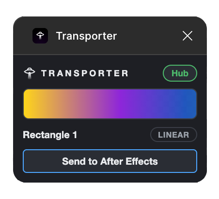
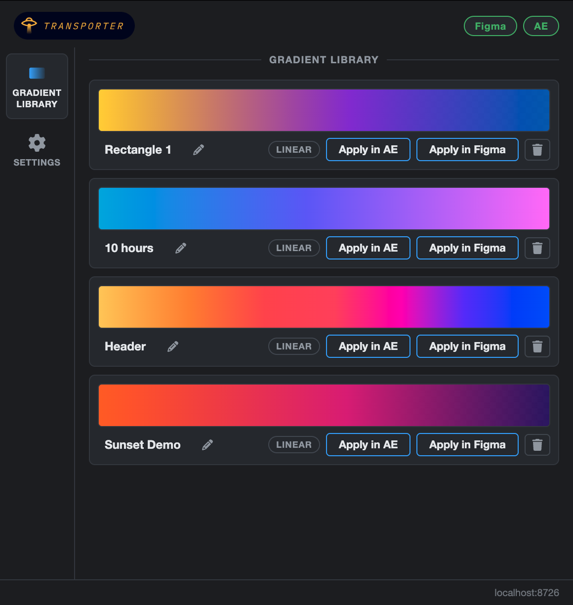
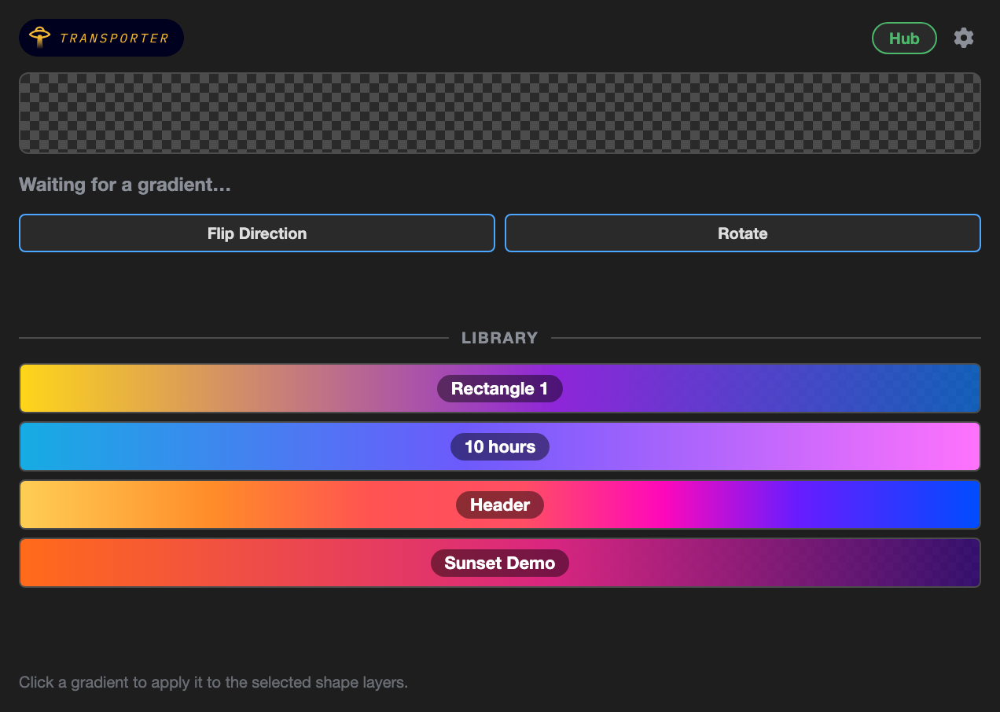

Transporter runs a local bridge on your machine between Figma
and After Effects. Gradients you send are applied instantly and
collected in a reusable library, so you can re-apply them in
either app whenever you need them.
What it looks like

The Figma plugin

The hub & library

The After Effects panel
Setup
Install the hub app
macOS: open the DMG and drag Transporter to
Applications.
Windows: run the setup installer.
Install the AE extension — open the
.zxp with a ZXP installer
(aescripts
ZXP Installer is free).
Install the Figma plugin from the
Community
page(currently in Figma's review
queue — check back soon if the page isn't live yet).
With the hub open: select a gradient-filled layer in Figma and
hit Send to After Effects. The gradient lands on your
selected shape layer and is saved to the library.
macOS will warn on first launch — Transporter is
not notarized with Apple. Right-click the app and choose
Open; if macOS still refuses, approve it under
System Settings → Privacy & Security → Open Anyway.
You only need to do this once.
Windows SmartScreen will warn too — the installer
isn't code-signed. Click More info → Run anyway.
The AE extension is signed with a self-signed
certificate — your ZXP installer may show an "unverified publisher"
notice. That's expected.
Requirements
macOS (Apple Silicon) or Windows (x64) · After
Effects 2024 or later (developed and tested on AE 2026) · Figma
desktop or web. Everything runs locally — Transporter makes no
network requests beyond your own machine.